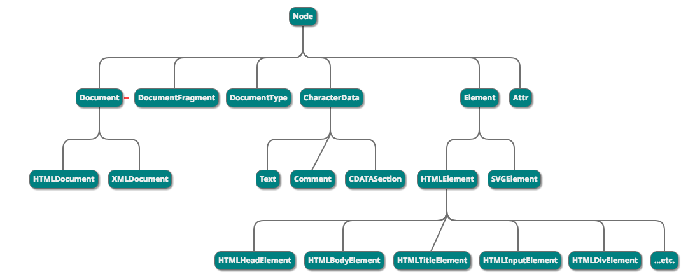

如果只是看解决方法，可以直接跳到第二小节
Angular 1.x版本是用JavaScript编写的，我们在百度Angular经常会搜索到AngularJS，并不是JavaScript的什么衍生版本，就是Angular 1.x。在后续版本中，改用TypeScript来重写了Angular框架。改动较大，所以做了个区分，Angular v1.x就叫AngularJS，v2及后续版本统称为Angular。
查资料和解决方案的时候，经常会搜索到大量的AngularJS内容，注意区分。
在这里提一下Angular的历史，是因为本文是在使用这个框架的时候遇到的，所以啰嗦两句。
现在有如下html文件：
<!-- 这俩随便挑一个用就行 -->
<input type="text" id="infoInput" name="infoInput">
<textarea id="infoArea" name="infoArea" rows="8" cols="80"></textarea>
<!-- 这俩也随便挑一个用就行 -->
<span id="some">something happen!</span>
<p id="any">anything ok!</p>我现在要通过TypeScript获取上面任意一个DOM元素，怎么做？有JS基础都知道，操作DOM可以通过document完成：
// 由于DOM元素的ID是惟一的，所以这种方式获取的是唯一的DOM元素
dom = document.getElementById('infoInput');
// name属性是不唯一的，所以这种方式获取的是所有 name=infoInput 的DOM元素，即一个数组
dom1 = document.getElementsByName('infoInput');而在TypeScript中当然也可以这么做，但是在具体使用的时候除了需要声明变量保存获取到的DOM元素之外，还有一点小小的问题。
// Angular框架中
export class Some implements OnInit {
ngOnInit() {
let dom = document.getElementById('infoArea');
// 1. 获取输入框中的内容
let html = dom.innerHTML;
let val = dom.value;
// 2. 打印输出
console.log(html);
console.log(val);
}
}这段代码写完会报一个错:
Property 'value' does not exist on type 'HTMLElement'
不要紧，即使有错误提示，我们依旧可以运行并得到正确的结果。如果想在ts文件编译失败时不生成js文件，可以通过配置实现。
HTMLElement是什么？这是一个对象，它包含了所有HTML元素公有的属性。
关于HTMLElement的详细内容以及浏览器的兼容，可以查看MDN的这篇文章
来看一张图：

图源自nanaistaken的博客。
如果你恰好有一点面向对象编程的知识，那么这张图就很容易理解，没有也没关系，毕竟无论是js还是ts，现在都增加了class关键字，引入了类的思想。
经过上面的分析，我们能够知道：getElementXXX()返回的是一个HTMLElement对象，而这个对象包含了所有DOM元素的公有属性。而每种不同类别的DOM元素，又有自己的特性，也就是图中的子类。
ts会做编译检查，所以会有错误提示，而js则不检查，所以这也会留下安全隐患。
到这里，其实应该已经明白了现在这种情况该怎么解决以及以后该怎么使用getElementXXX函数了。
修改后的代码：
export class Some implements OnInit {
ngOnInit() {
// *. 做一次类型转换，或者做类型断言
let dom = <HTMLInputElement>document.getElementById('infoArea');
let dom1 = document.getElementById('infoArea') as HTMLElement;
// 1. 获取输入框中的内容
let html = dom.innerHTML;
let val = dom.value;
// 2. 打印输出
console.log(html);
console.log(val);
}
}HTMLElement是DOM结点共有的属性，TypeScript库中抽取该属性作为一个公共接口，类似于其他面向对象语言如Java和c++中所说的基类。这样做可以保证在操作DOM结点的时候不会出现访问不存在属性的问题。
HTMLInputElement是HTMLElement的一个子接口（或说子类，但TypeScript是支持class的，所以说接口更好一些），其内部封装了如input，textarea这类dom结点的属性。